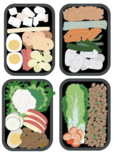

1. Lav en madplan
Handl stort ind én gang i ugen, så du kan lave mad til flere dage.
Planlæg dine indkøb via tilbuddende i tilbudsaviserne tæt på dig.
Her kan du mealpreppe alt maden, så du ikke skal lave mad hver dag.
2. Tøm køleskabet
Se hvilke grøntsager og tørvarer du har tilbage i dit køkken og skriv derefter i en Google-søgning:
-Opskrifter med x, x og x-
Så finder du nye ideer til dine rester - mega fedt!

3. Brug fryseren!
Vidste du godt, at du kan fryse tomatpuré, revet ost, mælk, krydderurter og meget mere ned?
Frys alle frysevenlige rester ned, så du har til senere istedet for at smide en halv dåse tomatpuré ud hver gang.
Tjek vores liste ud, så du altid er sikker.
Liste til frostvarer
4. Sæsonens grøntsager
Udnyt sæsonens grøntsager, da de oftest er billigere end resten.
Efterårets grøntsager i Danmark er persillerod, rosenkål, jordskokker, grønkål, græskar, kålrabi og kartofler.
Lækre og billige råvarer er en win-win!